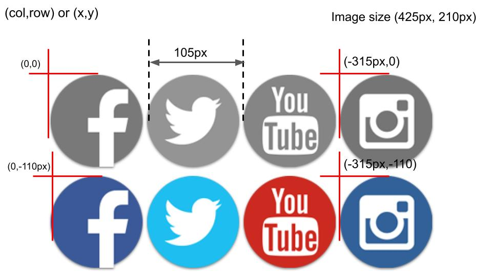

CSS Image Sprites

- An image sprite basically an image which is a collection of different images put together to form a single image.
- A CSS sprite is a technique which is often used by web developers to optimize the performance of web pages.
- In this technique, multiple smaller images usually of same dimensions are combined into a single big image called a sprite sheet or tile set.
- Usually, elements like logos, navigation arrows, buttons are included in the sprite sheet as they are almost of the same dimensions and are frequently used in a web page.
- A web page with many images can take a long time to load and generates multiple server requests.
- Using image sprites will reduce the number of server requests and save bandwidth.
- It reduce the bandwidth used to load multiple images. This way less data is consume.
- Image sprites are generally used for designing a graphic social media bar or a navigation bar to make it more attractive and efficient at the same time. It is just a method in HTML and CSS to implement more efficient way of putting images and designing web pages.